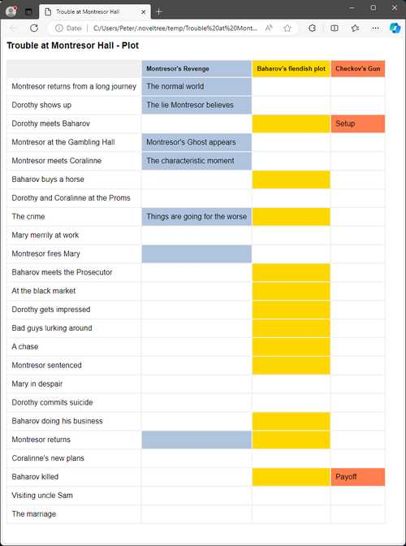

Plot-Menü
Plotelementfunktionen
Plotlinie hinzufügen
Eine neue Plotlinie erzeugen
Mit Plot > Plotlinie hinzufügen können eine Plotlinie in den Baum einfügen.
Wenn eine Plotlinie ausgewählt ist, wird die neue Plotlinie dahinter platziert.
Andernfalls wird die neue Plotlinie an den Schluss gesetzt.
Die neue Plotlinie hat einen automatisch erzeugten Titel. Sie können ihn im rechten Bereich der Arbeitsfläche ändern.
Plotpunkt hinzufügen
Einen neuen Plotpunkt erzeugen
Mit Plot > Plotpunkt hinzufügen können Sie einer Plotlinie einen Plotpunkt hinzufügen.
Wenn ein Plotpunkt ausgewählt ist, wird der neue Plotpunkt dahinter platziert.
Wenn eine Plotlinie ausgewählt ist, wird der neue Plotpunkt an letzter Stelle platziert.
Andernfalls wird kein neuer Plotpunkt erzeugt.
Der neue Plotpunkt hat einen automatisch erzeugten Titel. Sie können ihn im rechten Bereich der Arbeitsfläche ändern.
Stadium einfügen
Ein neues Stadium zwischen den Abschnitten einfügen
Mit Plot > Stadium einfügen können Sie ein Stadium hinter dem ausgewählten Kapitel oder Abschnitt einfügen.
Hinweis
Standardmäßig ist das neue Stadium auf der zweiten Ebene. Sie können die Ebene ändern (siehe unten).
Ebene ändern
Die Ebene der ausgewählten Stadien ändern
Mit Plot > Ebene ändern können Sie die Ebene der ausgewählten Stadien ändern.
Erste Ebene wird in fetter Schrift dargestellt.
Zweite Ebene wird in normaler Schrift dargestellt.
Bemerkung
Die Ebene eines Stadiums dient nur zur visuellen Unterscheidung. Sie hat keine Auswirkung auf die Programmfunktion.
Plotlinien importieren
Plotlinien mit Plotpunkten aus einem anderen Projekt importieren
Mit Plot > Plotlinien importieren können Sie eine Auswahl von Plotlinien aus einem anderen Projekt importieren. Zuerst wählen Sie eine XML-Datei aus, welche die Plotlinien enthält. Dann wählen Sie die Plotlinien aus, die Sie zum aktuellen Projekt hinzufügen wollen.
Hinweis
Um für das aktuelle Projekt eine XML-Plotliniendatei zu erzeugen, rufen Sie Exportieren > XML-Datendateien auf.
Handlungsraster (Plot grid) zum Bearbeiten exportieren
Ein ODS-Dokument exportieren, das bearbeitet und zurückgelesen werden kann
Mit Plot > Handlungsraster (Plot grid) zum Bearbeiten exportieren können Sie ein Tabellenkalkulationsdokument erzeugen, wie im Kapitel Mit novelibre plotten beschrieben, mit einer Zeile pro Abschnitt und den folgenden Spalten:
Abschnitts-ID (eingeklappt)
Abschnittsnummer (Hyperlink zum Manuskript)
Handlungsdatum
Handlungszeit
Tag
Dauer (<Tage>d <Stunden>h <Minuten>min)
Abschnittstitel
Abschnittsbeschreibung
Perspektivfigur (Kurzname)
eine Spalte pro Plotlinie mit den Plotliniennotizen des Abschnitts
Schlagwörter
Szene
Ziel/Reaktion/(benutzerdefiniert)
Konflikt/Dilemma/(benutzerdefiniert)
Ausgang/Entscheidung/(benutzerdefiniert)
Abschnittsnotizen
Bemerkung
Nur „normale“ Abschnitte erscheinen im Handlungsraster. Abschnitte vom Typ „unbenutzt“ werden ausgelassen.
Dieses Dokument kann mit Calc bearbeitet und zu novelibre
zurückgespielt werden.
Der Dateinamenszusatz lautet _grid_tmp.
Bemerkung
Sie können Zeilen und Spalten umordnen, verbergen oder löschen, ohne dass es Auswirkungen auf den Reimport hat. Nur die erste Zeile und die erste Spalte, die standardmäßig verborgen sind, dürfen nicht verändert werden, weil sie die Strukturinformationen für den Import enthalten.
Mit
Strg-Klick auf eine Abschnittsnummer können Sie zum entsprechenden Abschnitt im Manuskript springen.Mit
Strg-Klick auf einen Plotlinientitel in der Kopfzeile können Sie zur entsprechenden Plotlinienbeschreibung springen, falls vorhanden (siehe unten).
Erzählstruktur-Beschreibung zum Bearbeiten exportieren
Ein ODT-Dokument exportieren, das bearbeitet und zurückgelesen werden kann
Mit Plot > Erzählstruktur-Beschreibung zum Bearbeiten exportieren,
können Sie ein Textdokument erzeugen, das
alle Stadien mit Beschreibung enthält.
Dieses Dokument kann mit Writer bearbeitet und zu novelibre
zurückgespielt werden.
Der Dateinamenszusatz lautet _structure_tmp.
Hinweis
Dies kann auch eine vollständige Inhaltsangabe darstellen, wobei der Schwerpunkt auf dem dramaturgischen Aufbau liegt.
Plotlinienbeschreibungen zum Bearbeiten exportieren
Ein ODT-Dokument exportieren, das bearbeitet und zurückgelesen werden kann
Mit Plot > Plotlinienbeschreibungen zum Bearbeiten exportieren,
können Sie ein Textdokument erzeugen, das
Stadien, Plotlinien und Plotpunkte enthält, jeweils mit Beschreibung.
Die Plotpunkte sind mit dem Manuskript und mit den Abschnittsbeschreibungen velinkt.
Dieses Dokument kann mit Writer bearbeitet und zu novelibre
zurückgespielt werden.
Der Dateinamenszusatz lautet _plotlines_tmp.
Plottabelle (Nur Export)
Ein ODS-Dokument exportieren
Mit Plot > Plottabelle (Nur Export)
können Sie ein Tabellendokument
mit einer Zeile pro Abschnitt und einer Spalte pro Plotlinie
erzeugen.
Verbindungspunkte zwischen Plotlinien und Abschnitten sind
farblich hervorgehoben.
Plotpunkttitel sind eingetragen.
Der Dateinamenszusatz lautet _plotlist.
Hinweis
Die Titel der Plotlinien und der Abschnitte sind als Querverweise zu den entsprechenden Stellen im Manuskript ausgeführt.
Das folgende Bild zeigt einen LibreOffice Screenshot. Beachten Sie den Plotlinientitel in der Plottabelle (links) zur Plotlinie in der Plotbeschreibung (rechts).

Wichtig
Hyperlinks in ODS-Tabellendokumenten sind im Dateisystem absolut, so dass sie eventuell nicht mehr funktionieren, nachdem Sie den Speicherort Ihres Projekts zu einem anderen Ordner oder Computer verschoben haben. In diesem Fall müssen Sie Ihr Tabellendokument erneut exportieren.
Plottabelle im Browser anzeigen
Einen HTML-Report mit Plotelementen anzeigen
Mit Plot > Plottabelle im Browser anzeigen erzeugen Sie eine HTML-Seite mit einer Plottabelle wie der ODS-Plottabelle (siehe oben), doch ohne Hyperlinks, und starten Ihren System-Webbrowser zur Anzeige.
Bemerkung
Der Report ist eine temporäre Datei, die bei Programmbeendigung automatisch gelöscht wird. Lassen Sie sie bei Bedarf von Ihrem Browser sichern oder ausdrucken.